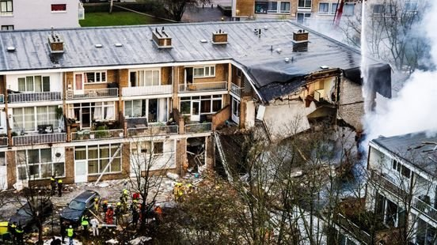

Tarwekamp
Documentary · EO / NPO Start
Edit · Nando de GrootNu in productie: In het hart van de zaak TARWEKAMP
Maar liefst tweehonderd(!) liter benzine aansteken in een bruidsmodezaak, betekent op de vroege ochtend van van 7 december 2024, de complete verwoesting van vele mensenlevens in de wijk Tarwekamp in Den Haag.
Naast zes doden, zijn velen hun huis kwijtgeraakt en moeten nabestaanden en slachtoffers ruim twee jaar wachten op duidelijkheid over de vergoeding van de financiële schade.
Deze documentaire volgt de omvangrijke rechtszaak en vertelt dit verhaal aan de hand van de indringende getuigenissen van nauw betrokkenen.
Publicatie volgt direct na de uitspraak van het vonnis door de Rechtbank in Den Haag, op EO/ NPO Start.
Een productie van We Gaan ’t Zien Media.